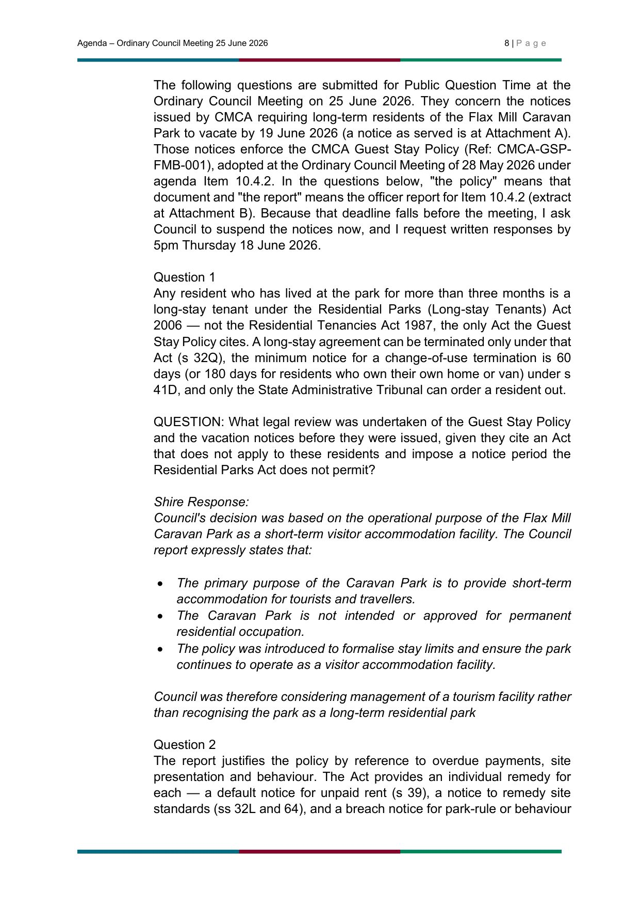

[ Your analysis of this answer goes here — keep it short. Put links right inside your sentences so they invite the click, like this: the Shire's response doesn't square with the management agreement. Replace this whole paragraph with your own words. ]

[ Your analysis of Question 2 goes here. ]
Image pending — the current crop is cut off on the right edge. Re-shoot Question 3 at full width and drop it into the images folder; I'll wire it in here.
[ Your analysis of Question 3 goes here. ]
Image pending — the current shot is a zoomed-in slice cut off on both edges. Re-shoot Question 4 at full width and drop it into the images folder; I'll wire it in here.
[ Your analysis of Question 4 goes here. ]

[ Your analysis of Question 5 goes here. ]
Image pending — the current crop is cut off on both edges (even the heading is clipped). Re-shoot Question 6 at full width and drop it into the images folder; I'll wire it in here.
[ Your analysis of Question 6 goes here. ]

[ Your analysis of Question 7 goes here. ]

[ Your analysis of Question 8 goes here. ]
Image pending — the current crop is cut off on the right edge. Re-shoot Question 9 at full width and drop it into the images folder; I'll wire it in here.
[ Your analysis of Question 9 goes here. ]
Image pending — the current crop is cut off on the right edge. Re-shoot Question 10 at full width and drop it into the images folder; I'll wire it in here.
[ Your analysis of Question 10 goes here. ]